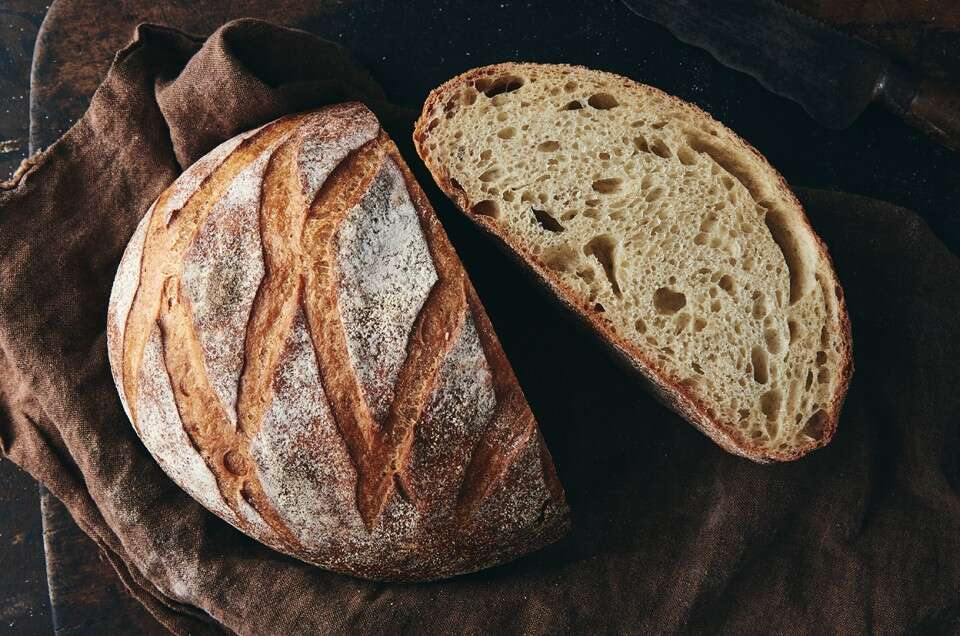

Countryloaf Recipe

Description
A delicious take on the classic take on the french countryloaf sourdough
recipe. A simple mix of flour, water, sourdough and voilà!
Ingredients
- 800g of Bread Flour
- 460g of water (just below room temp.)
- ~12g of salt
- 325g of Sourdough
Steps
-
Mix your dry ingredients together with a whisk, until nicely blended.
-
Mix the blended dry ingredients with your Sourdough, until a crumbly
consistency.
-
Let the mixture sit fo ~10-15 mins, as to form some gluten structure to
mix better later on
-
Add the water and mix until it passes the window-pane test (depending on
your flour, add less of the water)
- Let the final dough sit for 4-5 hours until doubled in size
-
Cover your workspace with a thin layer of flour to place the dough
- Cut the dough into 2 pieces (or 3 for smaller loafs)
- Shape the pieces into loafs
-
Place shaped pieces into nicely floured bread-bannetons or appropriately
sized tupperware
- Cover the loafs in a bad and place in the fridge for ~8-12 hours
- Before next steps, preheat oven to 480-490C
-
Take loafs out of fridge place into a dutch oven, cut bread on the top
side or center with a leif (razor will do just fine)
-
Place bread into for 40mins, make sure to place a tin of water to
humidify the oven for abetter oven-spring
- Remove the lid of the dutch-oven for 2-3 mins for browning and blistering
- Take out loafs and let them rest for an hour
- Enjoy :)